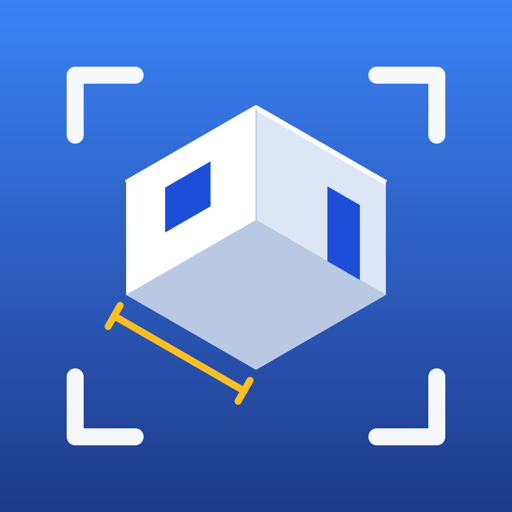
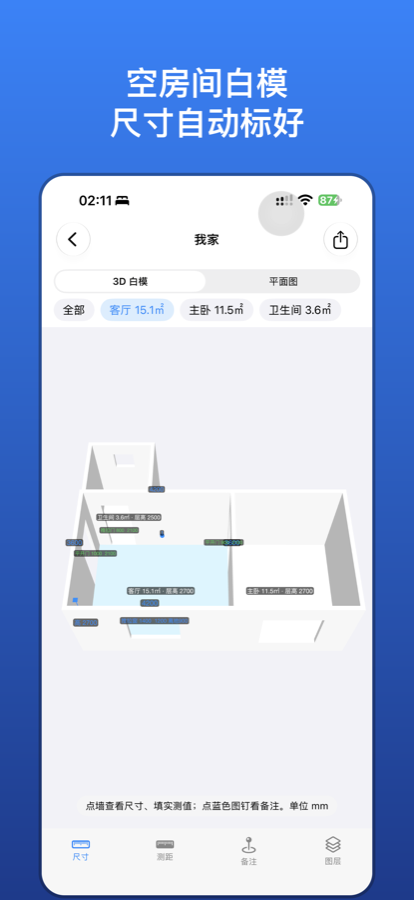
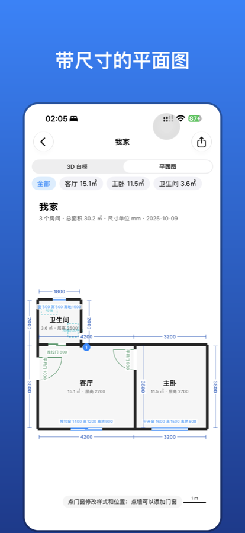
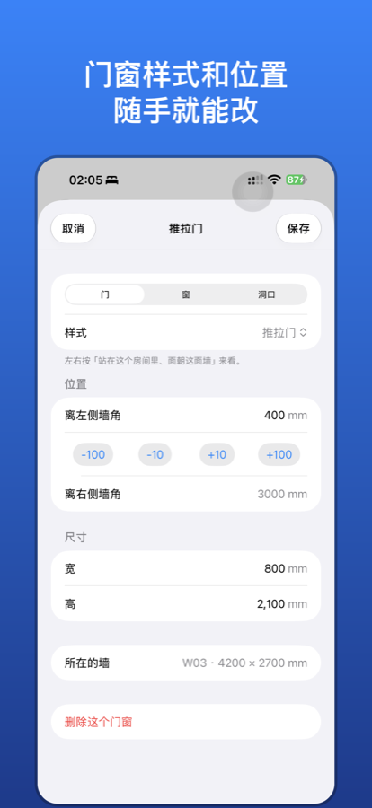

全屋白模
用 iPhone LiDAR 扫描全屋，生成白模和尺寸图，交给 AI 做室内设计



能做什么
- 一间一间地扫：基于 Apple RoomPlan，扫完一个房间起个名字，接着扫下一个，最后自动拼成全屋。
- 自动拍照：扫描时手机拿稳就自动拍，每张照片都记下拍摄位置、朝向和拍到的墙。
- 空房间白模：只保留墙、地面和真实挖空的门窗洞口，家具全部去掉。
- 尺寸自动标好：墙长、层高、门窗尺寸和离地高度；梁下较矮的墙单独标出墙高。
- 标注：测距、备注、附照片；用卷尺量过的墙可以填实测值。
- 导出给 AI：OBJ / USD 白模、PNG / PDF 尺寸平面图、结构化数据 scene.json、照片，以及一个 Blender 重建脚本。
设备要求
带 LiDAR 的 iPhone（iPhone 12 Pro 及之后的 Pro / Pro Max），iOS 18 或更高版本。
隐私
所有扫描数据和照片只保存在你的手机上。App 不联网、不收集任何数据，只有你主动点「打包分享」时才会把文件交给你选择的目标。详见隐私政策。
开源
全屋白模是开源软件，使用 MIT 许可证。源代码在 GitHub，欢迎提问题和贡献代码。
RoomScan
Scan your home room by room with iPhone LiDAR (Apple RoomPlan). RoomScan builds an empty whitebox 3D model with real door and window openings, a dimensioned floor plan, and captures reference photos with their camera poses while you scan.
Export a single zip with OBJ/USDA models, PNG/PDF floor plans, a structured scene.json, photos, and a Blender script that rebuilds the model at true scale — ready for AI-assisted interior design.
Requires an iPhone with LiDAR and iOS 18 or later. All data stays on your device; the app collects nothing. The app UI is currently in Chinese.